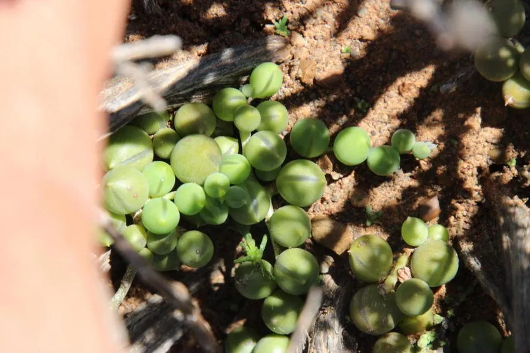

多肉植物 · 植物界
佛珠 Senecio rowleyanus

菊科千里光属多年生多肉，叶片圆球形如串串念珠，垂吊生长，是吊篮植物的热门选择，原产非洲西南部。
- 分类
- 门被子植物门纲木兰纲目菊目科菊科属千里光属
- 栖息环境
- 非洲西南部干旱地区的岩石缝隙与灌丛下，喜半阴、通风
- 地理分布
- 原产非洲西南部，世界各地广泛盆栽，中国各地常见
- 保护级别
- 暂无评估
物种志
佛珠为菊科千里光属多年生肉质草本，茎细长、匍匐下垂，长可达 1 米，叶片球形，直径约 1 厘米，肉质，绿色，表面有一条透明的纵纹，排列在茎上如串串念珠。花小，白色，花期秋季至冬季；果实为瘦果，带冠毛。
佛珠原产非洲西南部的纳米比亚、南非一带，生于干旱地区的岩石缝隙和灌丛下，喜温暖、凉爽、半阴和通风的环境，忌强光暴晒和积水。它叶片球形、肉质储水，垂吊生长时像一串串绿念珠，是吊篮和窗台悬挂栽培的热门多肉。栽培时用颗粒土、见干见湿，繁殖以扦插为主，剪下的茎段平铺土面即可生根，很快就能长成一盆新的垂吊株，也是送给朋友的小礼物。
形态与习性
- 株高茎长可达 1 米，垂吊生长
- 花期秋季至冬季，花小，白色
- 果期花后结瘦果，带冠毛
- 光照喜半阴散射光，忌强光暴晒
- 水分耐旱，见干见湿，忌积水
- 土壤颗粒为主、排水良好的矿质土
- 繁殖以扦插为主
- 主要用途吊篮、垂吊盆栽、室内装饰
趣味知识
- 佛珠的叶片圆球形，排列在茎上像一串串绿色念珠，因此得名。
- 叶片表面有一条透明纵纹，能让光线进入叶肉进行光合作用。
- 佛珠垂吊生长，是吊篮和窗台悬挂栽培的热门多肉。
- 剪下的茎段平铺在土面上就能生根，扦插繁殖十分简单。